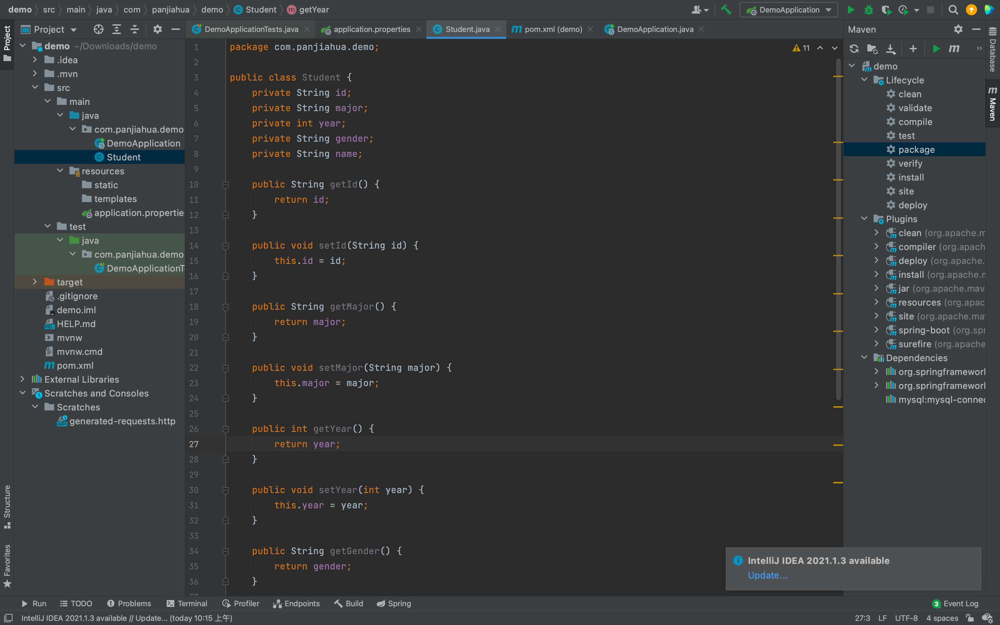

Spring Boot+Mybatis使用
在上次课我们已经建造了一个数据库并向其中添加了一些记录。
本节课学习的内容
- 配置
Mybatis。 - 实现三个接口
/product/get和/product/add，/product/delete来操控数据库，进行获取、添加和删除信息的操作。 - 把
MySQL服务以及SpringBoot服务部署到自己的云服务器上（请搜索该怎么做），然后更改配置。
连接数据库
在src/main/resources/application.properties这个文件中加入
spring.datasource.url=jdbc:mysql://localhost:3306/<schema的名字>?serverTimezone=UTC&useUnicode=true&characterEncoding=utf-8&useSSL=true
spring.datasource.username=<MySQL的用户名>
spring.datasource.password=<MySQL的密码>
spring.datasource.driver-class-name=com.mysql.cj.jdbc.Driver
server.port=8080 #端口可以随便写，但是如果之后要部署到服务器上的话建议8080
创建类(Class)
相对应上节课做的数据表，我们需要在Java中新建一个Class，使之与数据表中的数据类型对应，这样才能把之后从数据库取得的数据暂时存在内存中。
在src/main/java/com/<网站前缀>/demo/中新建Student.java。
public class Student {
private String id; // 这边private的原因是因为不让用户可以直接访问到其中的信息，使其更加安全
private String major;
private int year;
private String gender;
private String name;
}
注意：请为全部五个字段加入 getter 和 setter，否则会造成无法正常读取或者写入信息。用 IntelliJ 的话，可以在 .java 文件里按下 Alt + Insert(Windows)、Command+N(Mac)选择 Getter and setter，按住 Shift 选中所有的类，自动添加。

添加完成后的结果是这样。

接口（Mapper）
我们还需要用MyBatis去访问数据库，在最开始配置的时候我们已经成功连接了数据库，我们还需要建立接口用来获取数据库中的数据，此时我们需要用到@Mapper 注释。
在src/main/java/com/<组织名>/demo/下新建StudentMapper.java的interface，并使用@Select 注释。
@Mapper // 作用：在接口类上添加了@Mapper，在编译之后会生成相应的接口实现类
// 可以告诉spring boot这个接口实现类由Mybatis负责创建，并将其实现类对象存储到spring容器中。
//说人话就是让Spring Boot用My Batis获取数据库中内容，并保存在内存中
public interface StudentMapper {
// @方法名+语句就可以使用对应的mysql的操作。
@Select("Select * from student;")
List<Student> listAllStudent();
}
控制器（Controller）
做了上面那些工具以后，我们还需要从外界接收请求的内容，于是我们就需要一个Controller来获取网页请求。@RestControlller 可以用来处理Http请求，@Resource “”“”“”，@GetMapping("/studentlist")等价@RequestMapping(value="/studentlist",method=RequestMethod.GET),接收到面对"student list"的Get请求，执行以下功能。
package com.panjiahua.demo;
import org.springframework.web.bind.annotation.GetMapping;
import org.springframework.web.bind.annotation.RestController;
import javax.annotation.Resource;
import java.util.List;
@RestController
public class StudentController {
@Resource
StudentMapper studentmapper1;
@GetMapping("/studentlist")
public List<Student> getStudentList(){
return studentmapper1.listAllStudent();
}
}
重新点击运行
访问http://localhost:8080/studentlist，可以看到以列表的形式呈现着数据库中的数据。
处理带有参数的请求
刚刚学习的返回数据库中信息的操作，直接访问该网页就会返回数据库中的内容，那么我们要如何向数据库中添加一条新的记录呢。这时候我们就需要用到@RequestParam对其网址进行分析
@GetMapping("/studentbyyear") //
public List<Student> getStudentByYear(@RequestParam(value="year",defaultValue = "2") int year){
@RequestParam
return studentmapper1.findStudentByYear(year);
}
碍于篇幅所限，本文无法再介绍更多内容，以下内容列出了常用的标识，可供读者参阅和尝试：
- Insert
- Update
- Delete
更多的内容，请于网上参考资料，本文将不再过多叙述。